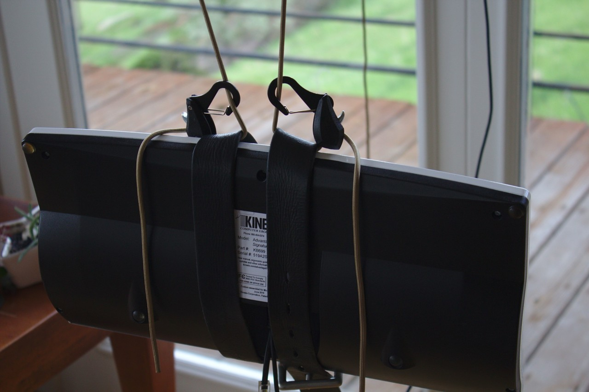

Ergo update:
suspending keyboard from ceiling
Today I was doing some standing computing (as described in the standing keyboard section of the deskless wfh post), when I realized I wanted to be able to take quick inversion breaks (handstands, headstands). Doing these inversions is impeded because I needed to detach my keyboard. Two solutions occurred to me:
Use straps + buckle to allow for quick attachment / detachment.
Also suspend the keyboard, so I can just walk up to it and start using it. Since the materials for this were readily at hand, I gave this option a shot! It took less than 5 minutes to set this up, which is a pretty great turnaround from idea to implementation.
Here's the initial implementation, using the same adjustable tie-downs$ and adhesive hangers$ described in the "Laptop Ceiling Suspension" post:

Here are some closeups on how it's attached:


The same can be done suspending it from branches / even twigs, just using the adjustable tie-downs$:
Roughly what it looks like in use:

So far I'm liking this a lot! I think there are still some advantages over a stationary mount, because the keyboard still has some movement freedom – I can move side to side / turn a bit. This movement freedom is not quite as much as suspension from pants, but there is the notable benefit that I can immediately walk away from the computer without having a keyboard attached to me!
Footnotes
Some links are amazon affiliate links, which sometimes send me a bit of money when you make purchases after clicking them. The purpose of this blog is sharing information and ideas, not making money. But I figure I may as well add them, and I appreciate usage of them! If you do feel inclined to show your appreciation for these posts directly in monetary form, feel free to buy me a coffee.